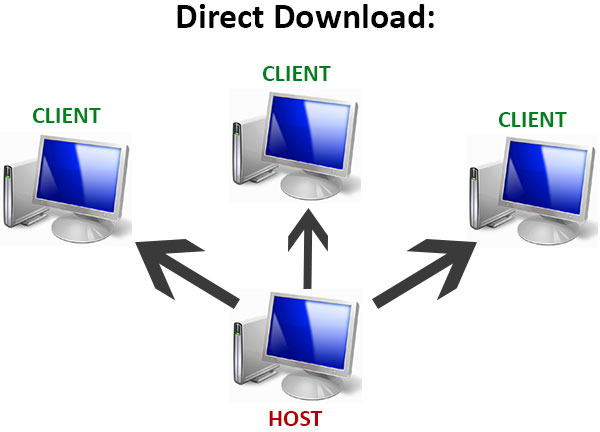
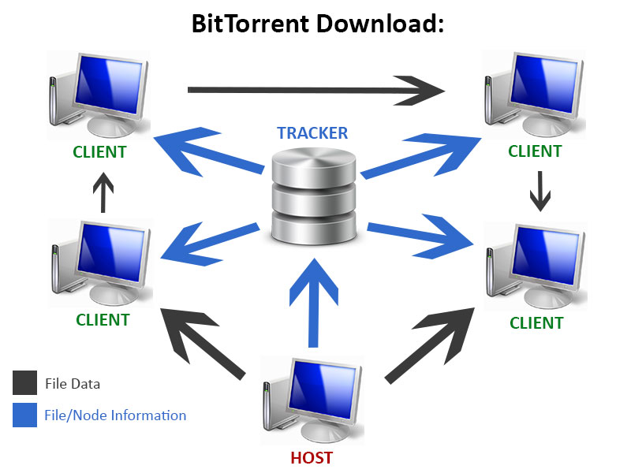
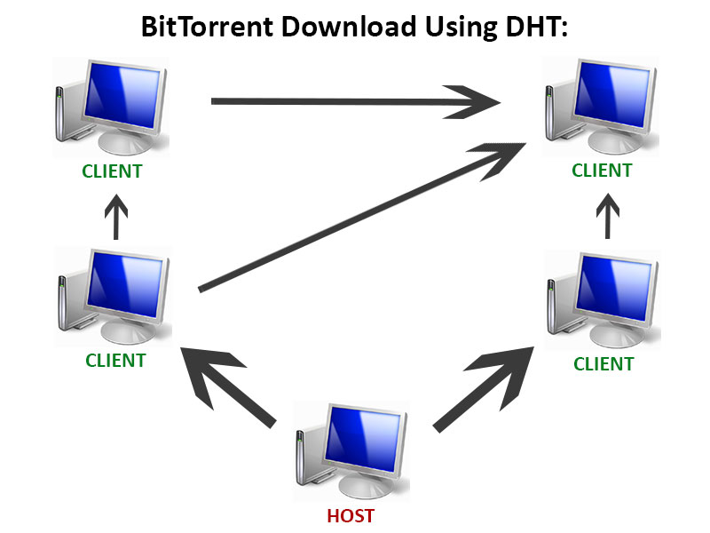

I am currently a student at The Pennsylvania State University intending to graduate in the Spring of 2017 with a Bachelors in Physics, a minor in Math, and plans for graduate school. My focuses include R&D, software development, physical research, and web design. I am driven, tech-savvy, and always looking to gain more experience in the fields of science and technology. For more about myself and my professional experiences please see my résumé, available below. I'm also on LinkedIn.
During my time with the physics department I served under Dr. Louis Leblond as a teaching assistant for PHYS 212 - Electricity and Magnetism. I was responsible for the instruction of physics curriculum as well as grading assignments and proctoring exams.
During the summer of 2015, Gannett, Inc. underwent a divisional corporate entity split. The newly formed entity would become Tegna, Inc. and take over the broadcasting devision of Gannett, Inc. I was assigned to the legal department at this time for a massive overhaul of the records database, both digital and physical.
Beginning in October of 2014, I was hired by Mad Dog Design for a short term project to develop and publish an online portfolio for the advertising agency. The result of this project can be found at maddogportfolio.com.
Dear [redacted],
I am writing to enquire about your opening for a [redacted] as advertised on [redacted]. I was excited to see such a position available, as I possess both the experience and personal qualities necessary to excel in such an environment. Currently a senior majoring in Physics at Penn State, I am living near campus taking summer courses and I would be available to begin immediately. I have had to privilege of working for the Eberly College of Science before as a teaching assistant in the physics department and the passion for knowledge that radiates from this school is something to be admired. My excellent communication skills, work ethic, and technical prowess will no doubt be a perfect fit for your office.
Perhaps my most notable relevant experience would be my time spent working for Gannett Company, Inc. It was there I was able to fully immerse myself in a hyper-efficient corporate environment and learn from one of the most successful publishing and digital broadcasting companies in the US. As a result I am both concise and fluid in my professional communication. During my time at Gannett I worked in a specialized team of data entry associates which were assigned to a massive overhaul of the legal database during a divisional corporate entity split. This required not only effective teamwork but also a strong individual work ethic, as we were each assigned to our own independent tasks quite frequently. These are all certainly attributes which would carry over nicely into this office assistant position.
Additionally, my time spent reporting to Dr. Leblond as a physics teaching assistant has exposed me to the inner-workings of the college of science in a potentially invaluable way. Beyond the pleasure of acquainting with staff and engaging with students, I was able to expand my mind as well as glimpse the magic of cutting edge research. This position would be an invaluable next step for me when it comes to interacting with the administrative side of research.
I want to thank you for your time and I hope my passion for this field is as useful to you as it is thrilling to me. If you have any further questions do not hesitate to contact me either by email at sol5413@psu.edu or by phone at [redacted].
Sincerely,
Samuel Lucas
| To: | Matthew Rockmore |
| From: | Samuel Lucas |
| Subject: | Home Energy Assistance Application Revisal |
| Date: | 20 May 2016 |
The purpose of this memo is to review and revise the application for the Low Income Energy Assistance Program. This document, originally produced in August of 2007 by the Department of Public Welfare (DPW), aims to clearly and efficiently gather information from those Pennsylvania residents seeking utility financial aid. As a result of the formality of the document one need little more than the title to identify the intended audience of this piece. Upon evaluation of the form I have compiled a few comments and concerns which I wish to address.
Summary
In order to increase efficiency the sections would be better rearranged to all include their respective instructions on the same page. In addition space could taken from sections two through five and some given to sections one, seven, thirteen, and fourteen in order to aid readability. Questions eight and nine could be better compiled into a single question inquiring solely of the insurer the reading wishes to pay. In terms of multilingual accessibility the document is largely lacking. Clearer instructions are needed in a greater variety of languages with means for any resident to translate or complete the form. Section six is redundant. Lastly, to minimize the chance of reader error or missing information, emphasized text in red should be reserved for those instructions regarding additional attached documents only.
Structure and Design
This document, although effective in its purpose of instructing the reading through providing all relevant information, is organized somewhat inefficiently. The current structure which utilizes boxed sections is a great way to keep information clearly categorized and arranged, however most of the questions in this document are detached from their respective response fields. Consequently the reader must jump around pages constantly, with a high potential to miss information or important instruction in the process. This could be remedied by combining each part of the instructions with their respective boxes. Those questions with little to no instructional information required should be placed earliest in the document and together so as to be most efficient with space. Additionally, the sizing of certain fields is questionable. Sections one, seven, thirteen, and fourteen could all use some additional room for response, whereas space on the document could be conserved by tightening sections two through five. Sections eight and nine could be better rearranged into a single question which requests the info solely from the supplier the reader wishes to pay, rather than force them to needlessly provide info on multiple suppliers.
Readability
One critical goal of this document is to be readable and accessible for any Pennsylvania resident, regardless of language spoken. This is a goal that I believe has not yet been properly met, but one which can be met after some slight modification. The first glaring issue is the multiple translations under the title followed by absolutely no means with which to read the document in any language other than English. On the top of page three there is a simple set of instructions printed in Spanish as well as English which instruct those in need of translation to contact the local county assistance office. This instruction would be far better suited at the very top of the document, and it should have the same instruction printed in each of the other four languages present in the translation of the title. Ideally there should also be some contact information or further assistance provided in regards to actually getting in touch with such an office, however the feasibility of such a modification would understandably depend on the scope of this documents distribution. Similarly, section six, which asks the reader in English if they understand English seems both redundant and unnecessary. I believe the document would be better suited with either full translations for each of the aforementioned languages, or instead with a single field indicating language of choice if the document is being translated to them verbally. This way the same information is conveyed to the reader as well as the DPW while reducing reader confusion.
Lastly, in order to prevent missing any important information or instruction within the document proper emphasis is essential. This is mostly executed well within the document, however section eight should put emphasis on those documents the reader may need to attach. Additionally, section fourteen puts emphasis on the entire instruction which is unnecessary for readability. Instead the instruction should emphasize only the last sentence with regards to attaching documents.
BitTorrent is a popular protocol for decentralized peer-to-peer file sharing over the internet. It is not a program on its own but rather a system utilized by programs called BitTorrent clients, which manage a user’s uploads and downloads. The act of utilizing this system is referred to as “torrenting” and it differs from traditional file sharing in that it does not depend on a central server to host the files.
When a typical download on the internet is initiated, the data from a file is transferred from the host to the user directly. The speed of the download is generally only limited by the performance of the server and available bandwidth. If the host server cannot bear the load of too many connections, it will slow and eventually crash. These are some simple mechanics of the internet which we interact with every day, however BitTorrent offers a different set of mechanics which attempt to work around these limitations.

Instead of directly connecting to and receiving from a single host server, users will connect to what is called a tracker. Trackers keep tabs on the IP address of all those torrenting the file in question and distribute this information in the form of a BitTorrent file, denoted with a “.torrent” file extension. The IP address, short for Internet Protocol address, is a numerical label assigned to every computer on a network which serves to provide the machines location and the interface of network it is using. This data is then used to connect to the group of computers hosting a file, collectively referred to as the “swarm”. The swarm is generally comprised of the initial uploader, who provides the entire file, as well as anyone who either downloaded or is currently downloading the file.

Advantages to this system include the independence from server performance. Files transferred using BitTorrent are broken up into many small, equally-sized pieces and sent in small numbers but from a group of machines rather than a single source. This means that the speed of the download will not diminish with an increase in users but rather performance will scale with number of participants. Because every BitTorrent download begins with a whole file, the slowest it could possibly be for a client is with a direct one-to-one connection. However, with a traditional download the one-to-one connection would theoretically allow for the fastest speeds capable by the server. This means BitTorrent can significantly outperform traditional downloads for popular files and generally match speeds for less popular files as well.
Uploading file content to the swarm is called seeding and it is always optional. Seeding entails providing only a small piece of the file at a time, from whatever the user has downloaded thus far, upon request from other computers in the swarm. Although the initial uploader provides the entire file, everyone else seeding the file will provide only a fraction of the file to any given downloader. Client software downloading the file will gradually piece it together, collecting either by rarest piece first or at random. As every piece arrives it is checked against the BitTorrent file for errors, meaning the quality of a download is never affected by use of this protocol.
In addition to the tracker dependent system, BitTorrent also most recently utilizes Distributed Hash Table (DHT) technology. With DHT the need for a central tracker is eliminated and the distribution of a file is entirely decentralized. A client using DHT acts as a node which can help pass on information about the file. When downloading a file, the client first connects to other nearby nodes which intern connect to their surrounding nodes and so on until information about the file has been gathered. Rather than mediate information with a BitTorrent file, DHT needs only a magnet link to initiate the connection. A magnet link is simply a tag for the specific file so the client knows which nodes to look for. Beyond these discrepancies in identifying the file information, the process of downloading and uploading files with BitTorrent is otherwise identical with or without DHT. In the following diagram the arrows will again represent the transfer of both file data as well as information on the file and its participating nodes. Notice that once the host has contributed the necessary data it may take a variety of paths in order to reach a client. At no point is the connection dependent on any single node in the network, including a tracker or the host.

Despite the many advantages of moving data via BitTorrent, the system is only designed for file sharing so media such as web pages or other live content would lie beyond its capability. The ideal architecture for web traffic is still a single well maintained server or system of servers so as to limit a client’s number of necessary connections. Although large content downloaded via the web, such as video games or operating systems, would still benefit greatly from the utilization of BitTorrent.
It is important to note that although BitTorrent is frequently associated with digital piracy, the protocol and process of torrenting is entirely legal. BitTorrent is simply another means of moving data over the internet, and one which is usually faster and more secure. The security found in the decentralization of the protocol is what often draws users with illegal intent, however these same benefits make BitTorrent an invaluable tool for a variety of perfectly legitimate users and organizations. Simply using BitTorrent does not provide any anonymity and the system is by no means designed or intended for nefarious use.
Works Cited:
N.d. Guiding Tech. Web. 7 June 2016. Computer picture used in diagram.
N.d. Why OR/Analytics People Need to Know About Database Technology. Web. 07 June 2016. Server icon used in diagram.